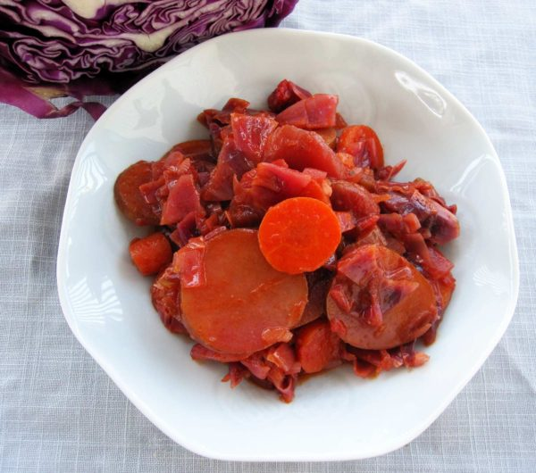

Red cabbage & beet borscht
This recipe could just as easily be named "Candy Borscht". The combination of sweet and sour is like a small explosion in your mouth. Although borscht has a pedestrian reputation, we think of this Red cabbage & beet borscht as a delicacy.
Potatoe
1
large
Beets
2
medium
Vegetable stock
4
cup
Butter
2
tbsp
Onion
1
medium
Salt
2
tsp
Celery stalk
1
Carrot
1
Red cabbage, chopped
3
cup
Black pepper
1
dash
Dill weed
1/4
tsp
Apple cider vinegar
1
tbsp
Honey
1
tbsp
Tomato puree
1
cup
Sour cream
1/2
cup
Slice the
1 large potatoe
2 medium beets
Combine beets, potatoes and
4 cup Vegetable stock
in a pot and boil until vegetables are soft when pierced with a fork. Remove cooked vegetables but keep stock.
Chop the
1 medium Onion
1 celery stalk
1 carrot
Heat the
2 tbsp butter
in a large pan or skillet on medium heat.
Add the chopped onion, as well as the
2 tsp Salt,
and saute until onion is soft (5 mins).
Add to the pan the leftover vegetable stock, chopped celery and carrot, as well as the
3 cup Red cabbage, chopped
Cook for 10 minutes, or until vegetables are soft.
Add potatoes and beets to the skillet and add the
Black pepper
1/4 tsp Dill weed
1 tbsp Apple cider vinegar
1 tbsp Honey
1 cup Tomato puree
Cover, reduce heat to medium low, and simmer for 30 minutes.
Serve topped with sour cream.
